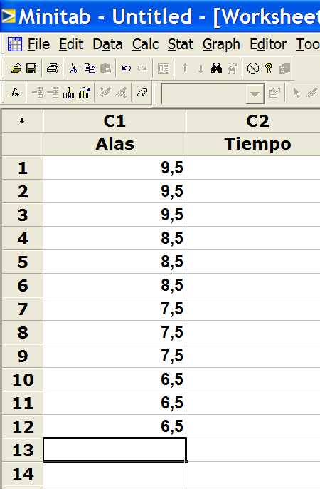

11. Regresión
Es necesario haber estudiado previamente los módulos 5, Probabilidad, 6, Estadística Básica, y 9, Contraste de Hipótesis, para poder comprender en profundidad el sentido de los análisis de regresión.
El material básico de lectura es el archivo "11.pdf", que se divide en los siguientes bloques:
Bloque 1) transparencias 1 a 8.
Los conceptos básicos acerca de regresión.
Bloque 2) transparencias 9 a 18
Ejemplo con una sola variable x de entrada.
Bloque 3) transparencias 19 a 30
Ejemplo con varias variables x de entrada.
Partiendo de un helicóptero estándar (ver características en 1, Introducción) pero que tenga las alas de 9,5 cm. de largo; tome tres tiempos de vuelo y apunte los resultados en una hoja de Minitab como se muestra a continuación.

Ahora reduzca en 1 cm del largo de las alas (se quedarán en 8,5 cm) y repita lo anterior. Siga reduciendo las alas hasta llegar al límite inferior (6,5 cm) de especificación.
Construya la recta de regresión Tiempo=f(Alas) y responda a lo siguiente:
a) ¿depende el tiempo de vuelo de la longitud de las alas?
b) ¿es una regresión de tipo lineal?
c) ¿cual es la expresión matemática de esa dependencia?
Lleve los resultados al informe del caso estudio.

La conocida herramienta de regresión se utiliza -cuando tanto las x's como la y son variables de tipo continuo, asiduamente en Seis Sigma. Nótese que, en ese caso, una sola herramienta tiene la doble utilidad que resaltamos en la pregunta anterior.
Ahora, si empleáramos esta herramienta para diseñar el helicóptero, ¿cuál cree usted que sería el error que cometeríamos en el diseño?